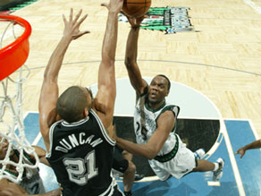

Inner text: 


	

  We go from Memphis to Minnesota.  We saw one awesome sophomore in the last edition (O.J. Mayo), and now I get to look at one I like even better (Kevin Love).  I like Al Jefferson a lot too and think that Minnesota has him in a Spursian type contract of great value for the right price.  I've always had a preference for Corey Brewer
as he was touted as a long armed, 3 point shooting, defensive
specialist when he was drafted.  I've read his progress is sketchy
though.  I know Randy Foye and Mike Miller are gone, but I'm not too sure who is new.  I'm really curious to do this one.
 
 
George Hill blocks Kevin Love's shot (via dvyoung05)
 No research was done on Kevin Love's twitter
so this may not be up to date.  Please comment if I'm wrong on
anything he has updated on his twitter.  I do know Rambis is their
new coach though.

  
    
    
I have a feeling most people on here wouldn't like this band, but the music for this one is Taking Back Sunday's Timberwolves at New Jersey.  It is one of my favorite songs by the them.
FSN Season Stats Head to Head
They gave up 102.7 points a game.  Can I stop there?
Guess not.  They shot the second worst at 44.1%
and gave up the 5th worst percentage at 47.4%.  They are a good
offensive rebounding team.  They ranked low in offensive boards
given up and defensive boards per game so I figure those stats are
skewed by their poor defensive shooting numbers.  They were 5th in
offensive boards and 18th in defensive boards given up.
They were the second most blocked team and had the
3rd least blocks on defense.  We're number 4 though.  The
Wolves were pretty average in assists and turnovers.
 
Last Season's Games

Wed, November 5  @ Minnesota  We win 129-125. "Parker's jumper sends game to second OT as Spurs win"
We had lost our first 3 games going into this
one.  It took two overtimes and 55 points and 10 assists from
Parker to  get our first win.  Mason and Duncan added another
56 points.  Al Jefferson (30) and Mike Miller (25) put up 55 for
the Wolves.  Kevin Love was very impressive for a rookie in his
4th game.
 
 
Tony Parker (55 points 10 assists) (via iDarthVader)
 
Fri, December 12 @ Minnesota  We win 98-86. "Spurs hand Wolves eighth straight loss"
Al Jefferson goes off for another 29 on us. 
Mike Miller is held to 3 points though.  Manu is back, and players
still on our roster account for 88 of 98 points.  Kevin Love only
scores 4 points but gets 10 boards (5 offensive) in 25 minutes off the
bench.
Tue, December 23  Minnesota  We win 99-93. "Parker, Spurs send Wolves to 13th straight loss"
Players still on our roster score 92 of the 97
points led by Parker's 36.  Al Jefferson drops another point 
from the previous match up and only gets 28, but we hold him to 6
rebounds.  Randy Foye put up 26.  Mike Miller didn't
play.  Kevin Love was held to zero offensive boards.  Our
bench let this one get closer than it should have losing the 4th
quarter 26-16.  Anthony Tolliver got 11 minutes if that gives you any indication of the rotation.
 
 
George Hill's vicious dunk in slow motion (Timberwolves @Spurs) (via dvyoung05) This
dunk cost Hill many minutes in the playoffs....Nice pass by Manu
though.  Hopefully this highlight serves as an appetizer for
'09-'10 full of Hill and Manu off the bench highlights.
 
Tue, March 17  Minnesota  We win 93-86. "Without Duncan, Parker helps Spurs gain ground in postseason race"
No Duncan, Manu or Al Jefferson is just a gut punch
as an NBA fan wanting to see good basketball.  61 of our 93 points
are still on the roster.  Parker scores 24 to lead all
scorers.  We are terrible from 3 and Minnesota outshoots us but we
win by outshooting them on the charity stripe and getting offensive
boards.  That felt weird to write that.  Kevin Love starts in
Jefferson's place and goes for 17 points and 19 boards (3 offensive).
 
Wolves Roster Changes

They drafted Ricky Rubio, Jonny Flynn, Wayne Ellington, and  Henk Norel.  A lot of people are crazy for Ricky Rubio. 
Last I read, he is definitely getting out of his current contract, but
that doesn't mean he is playing in the NBA.  I've also heard he is
trade bait.  I somewhat doubt this.  Jonny Flynn
is another PG, out of Syracuse.  According to DraftExpress, he led
the NCAA in assists per game and 19th in points.  He is said to be
turnover prone but he seems to be an offensive weapon, creating for
himself and others.  Wayne Ellington
is a SG out of UNC.  I'm not sure if his 3 pointer has NBA range,
but by his college numbers, the guy appears to love to shoot. 
DraftExpress says he was the most efficient shooter they looked at in
the draft, but he had half as many possessions as some of the other
guards they looked at.  Henk Norel
is a 21 year old PF/C from the Netherlands.  He is 6'11" but only
212 pounds.  DraftExpress says Norel is a best case Jeff Foster
and worst case Oberto.  He supposedly has great touch and movement
off the ball but lacks offense.  I don't know if he will be
playing in the States next year or not.  They have the roster
spots but he may be better served to stay in Europe.
They also traded Mike Miller, Randy Foye, Mark Madsen, Sebastian Telfair, Craig Smith, and Etan Thomas for Darius Songalia, Oleksiy Pecherov, Quentin Richardson, Chucky Atkins, and Damien Wilkins.  Mike Miller, Randy Foye, Craig Smith and Sebastian Telfair
are all notable losses as they accounted for 46.1 points, 15.2
rebounds, and 14.5 assists per game.  Songaila is a solid
addition.  Richardson is a decent addition.  He can
score.  Atkins is a great veteran presence to back up their young
guards and hopefully serve as a mentor.  Someone needs to tell
Pecherov he isn't Dirk.  He is 7' and has taken just under half of
all of his FGA's from the 3 only making ~30% of them.  He will see
limited minutes behind their front court though.
Kevin Ollie and Shelden Williams left in FA, and Rodney Carney and Jason Collins are still unsigned FA's.
 
The Match-Up
Starters
PG: Tony Parker
versus Ricky Rubio: Advantage Spurs:  Tony gets to show a 19 year
old European top PG prospect what the NBA is like.  This should be
a fun match up because of the international hype these two bring.SG: Roger Mason versus Damien Wilkins:
Advantage Spurs:  This is who ESPN says will start for you,
Minnesota.  I think you would be better off with Ellington or
Richardson here.  Wolves fans, please comment on this
position.  Mason is better than all of them at this point though.
SF: Richard Jefferson versus Ryan Gomes:
Advantage Spurs:  I know very little about Gomes.  On a stat
comparison, I'm going with RJ.  Gomes will definitely be in a
position to up his scoring and take on a big role if he has it in him.
PF: Antonio McDyess
versus Kevin Love: Advantage Wash:  Looking at Kevin Love, he is a
younger McDyess.  They are a statistical tie.  I give Love
the advantage on athleticism and Dice the advantage on veteran
knowledge. 


That is a block. via www.nba.com
 
C: Tim Duncan
versus Al Jefferson: Advantage Spurs:  Duncan gets the advantage,
but this is the closest match up we have had for him yet.  As a
basketball fan, I hope Jefferson stays healthy all season and that he
dominates like I think he can (just not against us).  He went for
29.0 and 11.0 last year against the Spurs. 
Bench:
Point Guard:  Hill vs Flynn, Bobby Brown, and Chucky Atkins:
I'm going to give this to Minnesota.  They have two players that
can take good minutes off the bench.  Atkins is a smart veteran
and Flynn is a top prospect rookie.  Hill is more than welcome and
more than capable to prove me wrong though.Wings: Manu, Finley, Hairston, and Williams vs Wayne Ellington, Corey Brewer, and Quentin Richardson:  Spurs win this one hands down.  Front Court: Blair, Mahinmi, Bonner, Haislip, and Ratliff vs Darius Songaila, Brian Cardinal, and Oleksiy Pecherov:  Songalia is decent but so is everyone on our much deeper rotation.
Coaching:  Advantage Spurs.  Back
in the very early 90's when I was 7-9 years old, my older brother
started collecting basketball cards.  Kurt Rambis was like a bad
omen card.  My friend and I  burnt one, ripped it to shreds,
and flushed it down a toilet when we were teenagers upon finding it
amongst our other non-binder worthy cards.  That fills my terrible
Kurt Rambis/ teenage pyro anecdote quota for the year.
Result: Spurs win all three games.  We
get to see some exciting front court match ups if everyone is healthy,
but the Wolves back court is too unproven and just not deep enough.
 
The Schedule
Tue, Dec 29 vs Minnesota: After a back to back of @ Bucks and @ Knicks, we have one day of rest before this game.
Fri, Mar 12 at Minnesota: First of a back to back with Clippers at home next.  After the Clips, it is one day off and then another back to back (@ Heat and then @ Magic.
Mon, Apr 12 vs Minnesota:  Last home game of the season.
So that is the Spurs-Wolves preview for next season.  Next up is the Golden State Warriors.
Past entries in this series: Grizzlies, Thunder, Clippers, Wizards and Kings.
    


 	
  Poll 
  What is the top Spurs-Wolves match-up story line for '09'10?
  
    

  
    
      21%
      
      Just Duncan vs Jefferson
      71 votes
      
    
  
    
      14%
      
      Parker vs Rubio (he better be in the league after all that hype)
      49 votes
      
    
  
    
      9%
      
      Duncan, McDyess, and our front court vs Jefferson, Love, and theirs
      32 votes
      
    
  
    
      12%
      
      Can Parker go for 56 and 11?
      42 votes
      
    
  
    
      21%
      
      Just 3 more SA wins.
      71 votes
      
    
  
    
      2%
      
      Sophomore Impact Showdown: Hill vs Love
      8 votes
      
    
  
    
      4%
      
      Rookie Impact Showdown: Blair vs Flynn/Ellington/Rubio
      15 votes
      
    
  
    
      12%
      
      Spurs backcourt is going to destroy the Wolves without Miller and Foye.
      41 votes
      
    
  
  329 votes
      
    | Poll has closed
  
    


  FastInit.addOnLoad(function(){
    new SBN.Poll('poll_container_47961_443642990').animateResults({renderImmediately:true});
  });


  


Formatted text: 


We go from Memphis to Minnesota. We saw one awesome sophomore in the last edition (O.J. Mayo), and now I get to look at one I like even better (Kevin Love). I like Al Jefferson a lot too and think that Minnesota has him in a Spursian type contract of great value for the right price. I've always had a preference for Corey Brewer
as he was touted as a long armed, 3 point shooting, defensive

specialist when he was drafted. I've read his progress is sketchy

though. I know Randy Foye and Mike Miller are gone, but I'm not too sure who is new. I'm really curious to do this one.


 

George Hill blocks Kevin Love's shot (via dvyoung05)

 No research was done on Kevin Love's twitter

so this may not be up to date. Please comment if I'm wrong on

anything he has updated on his twitter. I do know Rambis is their

new coach though.


  

    

    

I have a feeling most people on here wouldn't like this band, but the music for this one is Taking Back Sunday's Timberwolves at New Jersey. It is one of my favorite songs by the them.

FSN Season Stats Head to Head

They gave up 102.7 points a game. Can I stop there?

Guess not. They shot the second worst at 44.1%

and gave up the 5th worst percentage at 47.4%. They are a good

offensive rebounding team. They ranked low in offensive boards

given up and defensive boards per game so I figure those stats are

skewed by their poor defensive shooting numbers. They were 5th in

offensive boards and 18th in defensive boards given up.

They were the second most blocked team and had the

3rd least blocks on defense. We're number 4 though. The

Wolves were pretty average in assists and turnovers.


Last Season's Games


Wed, November 5 @ Minnesota We win 129-125. "Parker's jumper sends game to second OT as Spurs win"

We had lost our first 3 games going into this

one. It took two overtimes and 55 points and 10 assists from

Parker to get our first win. Mason and Duncan added another

56 points. Al Jefferson (30) and Mike Miller (25) put up 55 for

the Wolves. Kevin Love was very impressive for a rookie in his

4th game.


 

Tony Parker (55 points 10 assists) (via iDarthVader)


Fri, December 12 @ Minnesota We win 98-86. "Spurs hand Wolves eighth straight loss"

Al Jefferson goes off for another 29 on us.

Mike Miller is held to 3 points though. Manu is back, and players

still on our roster account for 88 of 98 points. Kevin Love only

scores 4 points but gets 10 boards (5 offensive) in 25 minutes off the

bench.

Tue, December 23 Minnesota We win 99-93. "Parker, Spurs send Wolves to 13th straight loss"

Players still on our roster score 92 of the 97

points led by Parker's 36. Al Jefferson drops another point

from the previous match up and only gets 28, but we hold him to 6

rebounds. Randy Foye put up 26. Mike Miller didn't

play. Kevin Love was held to zero offensive boards. Our

bench let this one get closer than it should have losing the 4th

quarter 26-16. Anthony Tolliver got 11 minutes if that gives you any indication of the rotation.


 

George Hill's vicious dunk in slow motion (Timberwolves @Spurs) (via dvyoung05) This

dunk cost Hill many minutes in the playoffs....Nice pass by Manu

though. Hopefully this highlight serves as an appetizer for

'09-'10 full of Hill and Manu off the bench highlights.


Tue, March 17 Minnesota We win 93-86. "Without Duncan, Parker helps Spurs gain ground in postseason race"

No Duncan, Manu or Al Jefferson is just a gut punch

as an NBA fan wanting to see good basketball. 61 of our 93 points

are still on the roster. Parker scores 24 to lead all

scorers. We are terrible from 3 and Minnesota outshoots us but we

win by outshooting them on the charity stripe and getting offensive

boards. That felt weird to write that. Kevin Love starts in

Jefferson's place and goes for 17 points and 19 boards (3 offensive).


Wolves Roster Changes


They drafted Ricky Rubio, Jonny Flynn, Wayne Ellington, and  Henk Norel. A lot of people are crazy for Ricky Rubio.

Last I read, he is definitely getting out of his current contract, but

that doesn't mean he is playing in the NBA. I've also heard he is

trade bait. I somewhat doubt this.Jonny Flynn

is another PG, out of Syracuse. According to DraftExpress, he led

the NCAA in assists per game and 19th in points. He is said to be

turnover prone but he seems to be an offensive weapon, creating for

himself and others. Wayne Ellington

is a SG out of UNC. I'm not sure if his 3 pointer has NBA range,

but by his college numbers, the guy appears to love to shoot.

DraftExpress says he was the most efficient shooter they looked at in

the draft, but he had half as many possessions as some of the other

guards they looked at. Henk Norel

is a 21 year old PF/C from the Netherlands. He is 6'11" but only

212 pounds. DraftExpress says Norel is a best case Jeff Foster

and worst case Oberto. He supposedly has great touch and movement

off the ball but lacks offense. I don't know if he will be

playing in the States next year or not. They have the roster

spots but he may be better served to stay in Europe.

They also traded Mike Miller, Randy Foye, Mark Madsen, Sebastian Telfair, Craig Smith, and Etan Thomas for Darius Songalia, Oleksiy Pecherov, Quentin Richardson, Chucky Atkins, and Damien Wilkins. Mike Miller, Randy Foye, Craig Smith and Sebastian Telfair

are all notable losses as they accounted for 46.1 points, 15.2

rebounds, and 14.5 assists per game. Songaila is a solid

addition. Richardson is a decent addition. He can

score. Atkins is a great veteran presence to back up their young

guards and hopefully serve as a mentor. Someone needs to tell

Pecherov he isn't Dirk. He is 7' and has taken just under half of

all of his FGA's from the 3 only making ~30% of them. He will see

limited minutes behind their front court though.

Kevin Ollie and Shelden Williams left in FA, and Rodney Carney and Jason Collins are still unsigned FA's.


The Match-Up

Starters

PG: Tony Parker

versus Ricky Rubio: Advantage Spurs: Tony gets to show a 19 year

old European top PG prospect what the NBA is like. This should be

a fun match up because of the international hype these two bring.SG: Roger Mason versus Damien Wilkins:

Advantage Spurs: This is who ESPN says will start for you,

Minnesota. I think you would be better off with Ellington or

Richardson here. Wolves fans, please comment on this

position. Mason is better than all of them at this point though.

SF: Richard Jefferson versus Ryan Gomes:

Advantage Spurs: I know very little about Gomes. On a stat

comparison, I'm going with RJ. Gomes will definitely be in a

position to up his scoring and take on a big role if he has it in him.

PF: Antonio McDyess

versus Kevin Love: Advantage Wash: Looking at Kevin Love, he is a

younger McDyess. They are a statistical tie. I give Love

the advantage on athleticism and Dice the advantage on veteran

knowledge.


That is a block. via www.nba.com


C: Tim Duncan

versus Al Jefferson: Advantage Spurs: Duncan gets the advantage,

but this is the closest match up we have had for him yet. As a

basketball fan, I hope Jefferson stays healthy all season and that he

dominates like I think he can (just not against us). He went for

29.0 and 11.0 last year against the Spurs.

Bench:

Point Guard: Hill vs Flynn, Bobby Brown, and Chucky Atkins:

I'm going to give this to Minnesota. They have two players that

can take good minutes off the bench. Atkins is a smart veteran

and Flynn is a top prospect rookie. Hill is more than welcome and

more than capable to prove me wrong though.Wings: Manu, Finley, Hairston, and Williams vs Wayne Ellington, Corey Brewer, and Quentin Richardson: Spurs win this one hands down. Front Court: Blair, Mahinmi, Bonner, Haislip, and Ratliff vs Darius Songaila, Brian Cardinal, and Oleksiy Pecherov: Songalia is decent but so is everyone on our much deeper rotation.

Coaching: Advantage Spurs. Back

in the very early 90's when I was 7-9 years old, my older brother

started collecting basketball cards. Kurt Rambis was like a bad

omen card. My friend and I burnt one, ripped it to shreds,

and flushed it down a toilet when we were teenagers upon finding it

amongst our other non-binder worthy cards. That fills my terrible

Kurt Rambis/ teenage pyro anecdote quota for the year.

Result: Spurs win all three games. We

get to see some exciting front court match ups if everyone is healthy,

but the Wolves back court is too unproven and just not deep enough.


The Schedule

Tue, Dec 29 vs Minnesota: After a back to back of @ Bucks and @ Knicks, we have one day of rest before this game.

Fri, Mar 12 at Minnesota: First of a back to back with Clippers at home next. After the Clips, it is one day off and then another back to back (@ Heat and then @ Magic.

Mon, Apr 12 vs Minnesota: Last home game of the season.

So that is the Spurs-Wolves preview for next season. Next up is the Golden State Warriors.

Past entries in this series: Grizzlies, Thunder, Clippers, Wizards and Kings.

    


 	

  Poll 

  What is the top Spurs-Wolves match-up story line for '09'10?

  

    


  

    

      21%

      

      Just Duncan vs Jefferson

      71 votes

      

    

  

    

      14%

      

      Parker vs Rubio (he better be in the league after all that hype)

      49 votes

      

    

  

    

      9%

      

      Duncan, McDyess, and our front court vs Jefferson, Love, and theirs

      32 votes

      

    

  

    

      12%

      

      Can Parker go for 56 and 11?

      42 votes

      

    

  

    

      21%

      

      Just 3 more SA wins.

      71 votes

      

    

  

    

      2%

      

      Sophomore Impact Showdown: Hill vs Love

      8 votes

      

    

  

    

      4%

      

      Rookie Impact Showdown: Blair vs Flynn/Ellington/Rubio

      15 votes

      

    

  

    

      12%

      

      Spurs backcourt is going to destroy the Wolves without Miller and Foye.

      41 votes

      

    

  

  329 votes

      

    | Poll has closed

  

    


  FastInit.addOnLoad(function(){

    new SBN.Poll('poll_container_47961_443642990').animateResults({renderImmediately:true});

  });


  


HTML: 

<div class="entry-body">
	

  <p><br />We go from Memphis to Minnesota.&nbsp; We saw one awesome sophomore in the last edition (<a href="http://www.sbnation.com/nba/players/35066/O_J_Mayo" class="sbn-auto-link">O.J. Mayo</a>), and now I get to look at one I like even better (<a href="http://www.sbnation.com/nba/players/35085/Kevin_Love" class="sbn-auto-link">Kevin Love</a>).&nbsp; I like <a href="http://www.sbnation.com/nba/players/4369/Al_Jefferson" class="sbn-auto-link">Al Jefferson</a> a lot too and think that Minnesota has him in a <a href="http://www.sbnation.com/nba/teams/SAN" class="sbn-auto-link">Spurs</a>ian type contract of great value for the right price.&nbsp; I've always had a preference for <a href="http://www.sbnation.com/nba/players/4357/Corey_Brewer" class="sbn-auto-link">Corey Brewer</a>
as he was touted as a long armed, 3 point shooting, defensive
specialist when he was drafted.&nbsp; I've read his progress is sketchy
though.&nbsp; I know <a href="http://www.sbnation.com/nba/players/4364/Randy_Foye" class="sbn-auto-link">Randy Foye</a> and <a href="http://www.sbnation.com/nba/players/21739/Mike_Miller" class="sbn-auto-link">Mike Miller</a> are gone, but I'm not too sure who is new.&nbsp; I'm really curious to do this one.</p>
<p>&nbsp;</p>
<p> </p>
<p align="center"><a href="http://www.sbnation.com/nba/players/50397/George_Hill" class="sbn-auto-link">George Hill</a> blocks Kevin Love's shot (via <a href="http://youtube.com/watch?v=HlET1K9hCBo">dvyoung05</a>)</p>
<p><br id="1249951583566" /> No research was done on Kevin Love's twitter
so this may not be up to date.&nbsp; Please comment if I'm wrong on
anything he has updated on his twitter.&nbsp; I do know Rambis is their
new coach though.</p>

  
    <p class="extend-divide"></p>
    
<p align="justify">I have a feeling most people on here wouldn't like this band, but the music for this one is Taking Back Sunday's <a href="http://www.youtube.com/watch?v=O45dGPUiERg">Timberwolves at New Jersey</a>.&nbsp; It is one of my favorite songs by the them.</p>
<h4><a href="http://msn.foxsports.com/nba/headToHeadTeamResults?statsId1=24&amp;statsId2=16&amp;">FSN Season Stats Head to Head</a></h4>
<p align="justify">They gave up 102.7 points a game.&nbsp; Can I stop there?</p>
<p align="justify">Guess not.&nbsp; They shot the second worst at 44.1%
and gave up the 5th worst percentage at 47.4%.&nbsp; They are a good
offensive rebounding team.&nbsp; They ranked low in offensive boards
given up and defensive boards per game so I figure those stats are
skewed by their poor defensive shooting numbers.&nbsp; They were 5th in
offensive boards and 18th in defensive boards given up.</p>
<p align="justify">They were the second most blocked team and had the
3rd least blocks on defense.&nbsp; We're number 4 though.&nbsp; The
Wolves were pretty average in assists and turnovers.</p>
<p align="justify">&nbsp;</p>
<h4>Last Season's Games<br /></h4>
<p align="center"><a href="http://3.bp.blogspot.com/_pnMV9CUmVW4/SVdNfrL_RGI/AAAAAAAAA_g/FqIAktP8GYU/s400/capt.0c2bd6675f914b77bcdecd8f13e92f52.grizzlies_spurs_basketball_txeg109.jpg"></a></p>
<p align="justify"><b>Wed, November 5&nbsp;</b><b> @ Minnesota&nbsp; <a href="http://sports.espn.go.com/nba/boxscore?gameId=281105016">We win 129-125</a></b>. "<a href="http://sports.espn.go.com/nba/recap?gameId=281105016">Parker's jumper sends game to second OT as Spurs win</a>"</p>
<p align="justify">We had lost our first 3 games going into this
one.&nbsp; It took two overtimes and 55 points and 10 assists from
Parker to&nbsp; get our first win.&nbsp; Mason and Duncan added another
56 points.&nbsp; Al Jefferson (30) and Mike Miller (25) put up 55 for
the Wolves.&nbsp; Kevin Love was very impressive for a rookie in his
4th game.</p>
<p align="justify">&nbsp;</p>
<p> </p>
<p align="center"><a href="http://www.sbnation.com/nba/players/21781/Tony_Parker" class="sbn-auto-link">Tony Parker</a> (55 points 10 assists) (via <a href="http://youtube.com/watch?v=UZTGoB5p5TQ">iDarthVader</a>)</p>
<p>&nbsp;</p>
<p align="justify"><b>Fri, December 12 @ Minnesota</b><b>&nbsp; </b><b><a href="http://sports.espn.go.com/nba/boxscore?gameId=281128024">We win 98-86</a></b>. "<a href="http://sports.espn.go.com/nba/recap?gameId=281212016">Spurs hand Wolves eighth straight loss</a>"</p>
<p align="justify">Al Jefferson goes off for another 29 on us.&nbsp;
Mike Miller is held to 3 points though.&nbsp; Manu is back, and players
still on our roster account for 88 of 98 points.&nbsp; Kevin Love only
scores 4 points but gets 10 boards (5 offensive) in 25 minutes off the
bench.</p>
<p><b>Tue, December 23</b>&nbsp;<b> </b><b>Minnesota&nbsp;</b><b> <a href="http://sports.espn.go.com/nba/boxscore?gameId=281223024">We win 99-93</a></b><b>.</b> "<a href="http://sports.espn.go.com/nba/recap?gameId=281223024">Parker, Spurs send Wolves to 13th straight loss</a>"</p>
<p align="justify">Players still on our roster score 92 of the 97
points led by Parker's 36.&nbsp; Al Jefferson drops another point&nbsp;
from the previous match up and only gets 28, but we hold him to 6
rebounds.&nbsp; Randy Foye put up 26.&nbsp; Mike Miller didn't
play.&nbsp; Kevin Love was held to zero offensive boards.&nbsp; Our
bench let this one get closer than it should have losing the 4th
quarter 26-16.&nbsp; <a href="http://www.sbnation.com/nba/players/24721/Anthony_Tolliver" class="sbn-auto-link">Anthony Tolliver</a> got 11 minutes if that gives you any indication of the rotation.</p>
<p align="justify">&nbsp;</p>
<p> </p>
<p align="center">George Hill's vicious dunk in slow motion (<a href="http://www.sbnation.com/nba/teams/MIN" class="sbn-auto-link">Timberwolves</a> @Spurs) (via <a href="http://youtube.com/watch?v=z1YqewyDrhk">dvyoung05</a>) <br />This
dunk cost Hill many minutes in the playoffs....Nice pass by Manu
though.&nbsp; Hopefully this highlight serves as an appetizer for
'09-'10 full of Hill and Manu off the bench highlights.</p>
<p>&nbsp;</p>
<p align="justify"><b>Tue, March 17</b><b>&nbsp; </b><b>Minnesota&nbsp;</b><a href="http://sports.espn.go.com/nba/boxscore?gameId=290102029"> </a><b><a href="http://sports.espn.go.com/nba/boxscore?gameId=290407025">We win 93-86</a></b><b>.</b> "<a href="http://sports.espn.go.com/nba/recap?gameId=290317024">Without Duncan, Parker helps Spurs gain ground in postseason race</a>"</p>
<p align="justify">No Duncan, Manu or Al Jefferson is just a gut punch
as an NBA fan wanting to see good basketball.&nbsp; 61 of our 93 points
are still on the roster.&nbsp; Parker scores 24 to lead all
scorers.&nbsp; We are terrible from 3 and Minnesota outshoots us but we
win by outshooting them on the charity stripe and getting offensive
boards.&nbsp; That felt weird to write that.&nbsp; Kevin Love starts in
Jefferson's place and goes for 17 points and 19 boards (3 offensive).</p>
<p>&nbsp;</p>
<h4>Wolves Roster Changes</h4>

<p align="justify">They drafted <a href="http://www.nba.com/draft2009/prospects/189.html">Ricky Rubio</a>, <a href="http://www.nba.com/draft2009/prospects/140.html">Jonny Flynn</a>, <a href="http://www.nba.com/draft2009/prospects/137.html">Wayne Ellington</a>, and  <a href="http://www.sbnation.com/nba/players/71945/Henk_Norel" class="sbn-auto-link">Henk Norel</a>.&nbsp; A lot of people are crazy for <a href="http://www.sbnation.com/nba/players/71905/Ricky_Rubio" class="sbn-auto-link">Ricky Rubio</a>.&nbsp;
Last I read, he is definitely getting out of his current contract, but
that doesn't mean he is playing in the NBA.&nbsp; I've also heard he is
trade bait.&nbsp; I somewhat doubt this.&nbsp;&nbsp;<a href="http://www.draftexpress.com/profile/Jonny-Flynn-1245/">Jonny Flynn</a>
is another PG, out of Syracuse.&nbsp; According to DraftExpress, he led
the NCAA in assists per game and 19th in points.&nbsp; He is said to be
turnover prone but he seems to be an offensive weapon, creating for
himself and others.&nbsp; <a href="http://www.draftexpress.com/profile/Wayne-Ellington-482/">Wayne Ellington</a>
is a SG out of UNC.&nbsp; I'm not sure if his 3 pointer has NBA range,
but by his college numbers, the guy appears to love to shoot.&nbsp;
DraftExpress says he was the most efficient shooter they looked at in
the draft, but he had half as many possessions as some of the other
guards they looked at.&nbsp; <a href="http://www.draftexpress.com/profile/Henk-Norel-1156/">Henk Norel</a>
is a 21 year old PF/C from the Netherlands.&nbsp; He is 6'11" but only
212 pounds.&nbsp; DraftExpress says Norel is a best case <a href="http://www.sbnation.com/nba/players/21704/Jeff_Foster" class="sbn-auto-link">Jeff Foster</a>
and worst case Oberto.&nbsp; He supposedly has great touch and movement
off the ball but lacks offense.&nbsp; I don't know if he will be
playing in the States next year or not.&nbsp; They have the roster
spots but he may be better served to stay in Europe.</p>
<p align="justify">They also traded <a href="http://www.nba.com/playerfile/mike_miller/index.html">Mike Miller</a>, <a href="http://www.nba.com/playerfile/randy_foye/index.html">Randy Foye</a>, <a href="http://www.nba.com/playerfile/mark_madsen/index.html">Mark Madsen</a>, <a href="http://www.nba.com/playerfile/sebastian_telfair/index.html">Sebastian Telfair</a>, <a href="http://www.nba.com/playerfile/craig_smith/index.html">Craig Smith</a>, and <a href="http://www.nba.com/playerfile/etan_thomas/index.html">Etan Thomas</a> for<a href="http://www.nba.com/playerfile/darius_songalia/index.html"> Darius Songalia</a>, <a href="http://www.nba.com/playerfile/Oleksiy_Pecherov/index.html">Oleksiy Pecherov</a>, <a href="http://www.nba.com/playerfile/quentin_richardson/index.html">Quentin Richardson</a>, <a href="http://www.nba.com/playerfile/chucky_atkins/index.html">Chucky Atkins</a>, and <a href="http://www.nba.com/playerfile/damien_wilikins/index.html">Damien Wilkins</a>.&nbsp; Mike Miller, Randy Foye, <a href="http://www.sbnation.com/nba/players/4365/Craig_Smith" class="sbn-auto-link">Craig Smith</a> and <a href="http://www.sbnation.com/nba/players/4356/Sebastian_Telfair" class="sbn-auto-link">Sebastian Telfair</a>
are all notable losses as they accounted for 46.1 points, 15.2
rebounds, and 14.5 assists per game.&nbsp; Songaila is a solid
addition.&nbsp; Richardson is a decent addition.&nbsp; He can
score.&nbsp; Atkins is a great veteran presence to back up their young
guards and hopefully serve as a mentor.&nbsp; Someone needs to tell
Pecherov he isn't Dirk.&nbsp; He is 7' and has taken just under half of
all of his FGA's from the 3 only making ~30% of them.&nbsp; He will see
limited minutes behind their front court though.</p>
<p><a href="http://www.sbnation.com/nba/players/21576/Kevin_Ollie" class="sbn-auto-link">Kevin Ollie</a> and <a href="http://www.sbnation.com/nba/players/21568/Shelden_Williams" class="sbn-auto-link">Shelden Williams</a> left in FA, and Rodney Carney and Jason Collins are still unsigned FA's.</p>
<p>&nbsp;</p>
<h4>The Match-Up</h4>
<p><b>Starters</b></p>
<p align="justify">PG: <a href="http://www.poundingtherock.com/2009/7/nba/players/21781/Tony_Parker" class="sbn-auto-link">Tony Parker</a>
versus Ricky Rubio: Advantage Spurs:&nbsp; Tony gets to show a 19 year
old European top PG prospect what the NBA is like.&nbsp; This should be
a fun match up because of the international hype these two bring.</p><p>SG: <a href="http://www.poundingtherock.com/2009/7/nba/players/21843/Roger_Mason" class="sbn-auto-link">Roger Mason</a> versus <a href="http://www.sbnation.com/nba/players/21588/Damien_Wilkins" class="sbn-auto-link">Damien Wilkins</a>:
Advantage Spurs:&nbsp; This is who ESPN says will start for you,
Minnesota.&nbsp; I think you would be better off with Ellington or
Richardson here.&nbsp; Wolves fans, please comment on this
position.&nbsp; Mason is better than all of them at this point though.</p>
<p align="justify">SF: <a href="http://www.poundingtherock.com/2009/7/nba/players/21550/Richard_Jefferson" class="sbn-auto-link">Richard Jefferson</a> versus <a href="http://www.sbnation.com/nba/players/4355/Ryan_Gomes" class="sbn-auto-link">Ryan Gomes</a>:
Advantage Spurs:&nbsp; I know very little about Gomes.&nbsp; On a stat
comparison, I'm going with RJ.&nbsp; Gomes will definitely be in a
position to up his scoring and take on a big role if he has it in him.</p>
<p align="justify">PF: <a href="http://www.poundingtherock.com/2009/7/nba/players/21692/Antonio_McDyess" class="sbn-auto-link">Antonio McDyess</a>
versus Kevin Love: Advantage Wash:&nbsp; Looking at Kevin Love, he is a
younger McDyess.&nbsp; They are a statistical tie.&nbsp; I give Love
the advantage on athleticism and Dice the advantage on veteran
knowledge.&nbsp;</p>
<p align="justify"><a href="http://cdn3.sbnation.com/imported_assets/225309/jefferson_spurs_080221_292.jpg"></a></p>
<p></p>
<div align="center">That is a block. via <a href="http://www.nba.com/media/timberwolves/jefferson_spurs_080221_292.jpg">www.nba.com</a></div>
<p>&nbsp;</p>
<p align="justify">C: <a href="http://www.poundingtherock.com/2009/7/nba/players/21776/Tim_Duncan" class="sbn-auto-link">Tim Duncan</a>
versus Al Jefferson: Advantage Spurs:&nbsp; Duncan gets the advantage,
but this is the closest match up we have had for him yet.&nbsp; As a
basketball fan, I hope Jefferson stays healthy all season and that he
dominates like I think he can (just not against us).&nbsp; He went for
29.0 and 11.0 last year against the Spurs.&nbsp;</p>
<p align="justify"><b>Bench:</b></p>
<p align="justify">Point Guard:&nbsp; Hill vs Flynn, <a href="http://www.sbnation.com/nba/players/24664/Bobby_Brown" class="sbn-auto-link">Bobby Brown</a>, and <a href="http://www.sbnation.com/nba/players/21736/Chucky_Atkins" class="sbn-auto-link">Chucky Atkins</a>:
I'm going to give this to Minnesota.&nbsp; They have two players that
can take good minutes off the bench.&nbsp; Atkins is a smart veteran
and Flynn is a top prospect rookie.&nbsp; Hill is more than welcome and
more than capable to prove me wrong though.</p><p>Wings: Manu, Finley, Hairston, and Williams vs <a href="http://www.sbnation.com/nba/players/71928/Wayne_Ellington" class="sbn-auto-link">Wayne Ellington</a>, Corey Brewer, and <a href="http://www.sbnation.com/nba/players/21901/Quentin_Richardson" class="sbn-auto-link">Quentin Richardson</a>:&nbsp; Spurs win this one hands down.&nbsp; </p><p>Front Court: Blair, Mahinmi, Bonner, Haislip, and Ratliff vs <a href="http://www.sbnation.com/nba/players/21844/Darius_Songaila" class="sbn-auto-link">Darius Songaila</a>, <a href="http://www.sbnation.com/nba/players/21740/Brian_Cardinal" class="sbn-auto-link">Brian Cardinal</a>, and <a href="http://www.sbnation.com/nba/players/24716/Oleksiy_Pecherov" class="sbn-auto-link">Oleksiy Pecherov</a>:&nbsp; Songalia is decent but so is everyone on our much deeper rotation.</p>
<p align="justify"><b>Coaching:</b>&nbsp; Advantage Spurs.&nbsp; Back
in the very early 90's when I was 7-9 years old, my older brother
started collecting basketball cards.&nbsp; Kurt Rambis was like a bad
omen card.&nbsp; My friend and I&nbsp; burnt one, ripped it to shreds,
and flushed it down a toilet when we were teenagers upon finding it
amongst our other non-binder worthy cards.&nbsp; That fills my terrible
Kurt Rambis/ teenage pyro anecdote quota for the year.</p>
<p align="justify"><b>Result: </b>Spurs win all three games.&nbsp; We
get to see some exciting front court match ups if everyone is healthy,
but the Wolves back court is too unproven and just not deep enough.</p>
<p align="justify">&nbsp;</p>
<h4>The Schedule</h4>
<p align="justify">Tue, Dec 29 vs Minnesota: After a back to back of @ <a href="http://www.sbnation.com/nba/teams/MIL" class="sbn-auto-link">Bucks</a> and @ <a href="http://www.sbnation.com/nba/teams/NYK" class="sbn-auto-link">Knicks</a>, we have one day of rest before this game.</p>
<p align="justify">Fri, Mar 12 at Minnesota: First of a back to back with <a href="http://www.sbnation.com/nba/teams/LAC" class="sbn-auto-link">Clippers</a> at home next.&nbsp; After the Clips, it is one day off and then another back to back (@ <a href="http://www.sbnation.com/nba/teams/MIA" class="sbn-auto-link">Heat</a> and then @ <a href="http://www.sbnation.com/nba/teams/ORL" class="sbn-auto-link">Magic</a>.</p>
<p align="justify">Mon, Apr 12 vs Minnesota:&nbsp; Last home game of the season.</p>
<p align="justify">So that is the Spurs-Wolves preview for next season.&nbsp; Next up is the <a href="http://www.sbnation.com/nba/teams/GSW" class="sbn-auto-link">Golden State Warriors</a>.</p>
<p><b>Past entries in this series: <a href="http://www.poundingtherock.com/2009/8/5/974327/my-team-is-better-than-yours">Grizzlies</a></b><b>, <a href="http://www.poundingtherock.com/2009/8/2/972473/my-team-is-better-than-yours-okc">Thunder</a></b><b>, <a href="http://www.poundingtherock.com/2009/7/28/963690/my-team-is-better-than-yours-los">Clippers</a></b><b>, <a href="http://www.poundingtherock.com/2009/7/26/962852/my-team-is-better-than-yours">Wizards</a> </b>and<b> <a href="http://www.poundingtherock.com/2009/7/21/957385/why-my-team-is-better-than-yours">Kings</a>.</b></p>
    


 	<fieldset class="poll-box">
  <legend>Poll</legend> 
  <h5 class="poll-title">What is the top Spurs-Wolves match-up story line for '09'10?</h5>
  
    
<div class="poll_container" id="poll_container_47961_443642990">
  
    <div class="poll_option clearfix">
      <div class="poll_option_percentage">21%</div>
      <div class="poll_option_result">
      <h5>Just Duncan vs Jefferson</h5>
      <div class="poll_option_bar"><span class="vote_count">71</span> votes</div>
      </div>
    </div>
  
    <div class="poll_option clearfix">
      <div class="poll_option_percentage">14%</div>
      <div class="poll_option_result">
      <h5>Parker vs Rubio (he better be in the league after all that hype)</h5>
      <div class="poll_option_bar"><span class="vote_count">49</span> votes</div>
      </div>
    </div>
  
    <div class="poll_option clearfix">
      <div class="poll_option_percentage">9%</div>
      <div class="poll_option_result">
      <h5>Duncan, McDyess, and our front court vs Jefferson, Love, and theirs</h5>
      <div class="poll_option_bar"><span class="vote_count">32</span> votes</div>
      </div>
    </div>
  
    <div class="poll_option clearfix">
      <div class="poll_option_percentage">12%</div>
      <div class="poll_option_result">
      <h5>Can Parker go for 56 and 11?</h5>
      <div class="poll_option_bar"><span class="vote_count">42</span> votes</div>
      </div>
    </div>
  
    <div class="poll_option clearfix">
      <div class="poll_option_percentage">21%</div>
      <div class="poll_option_result">
      <h5>Just 3 more SA wins.</h5>
      <div class="poll_option_bar"><span class="vote_count">71</span> votes</div>
      </div>
    </div>
  
    <div class="poll_option clearfix">
      <div class="poll_option_percentage">2%</div>
      <div class="poll_option_result">
      <h5>Sophomore Impact Showdown: Hill vs Love</h5>
      <div class="poll_option_bar"><span class="vote_count">8</span> votes</div>
      </div>
    </div>
  
    <div class="poll_option clearfix">
      <div class="poll_option_percentage">4%</div>
      <div class="poll_option_result">
      <h5>Rookie Impact Showdown: Blair vs Flynn/Ellington/Rubio</h5>
      <div class="poll_option_bar"><span class="vote_count">15</span> votes</div>
      </div>
    </div>
  
    <div class="poll_option clearfix">
      <div class="poll_option_percentage">12%</div>
      <div class="poll_option_result">
      <h5>Spurs backcourt is going to destroy the Wolves without Miller and Foye.</h5>
      <div class="poll_option_bar"><span class="vote_count">41</span> votes</div>
      </div>
    </div>
  
  <p class="poll-total-votes"><strong>329</strong> votes
      
    | <span class="poll-has-closed">Poll has closed</span>
  
  </p>  
</div>

<script>

  FastInit.addOnLoad(function(){
    new SBN.Poll('poll_container_47961_443642990').animateResults({renderImmediately:true});
  });

</script>

  
</fieldset>

</div>